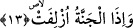

Cehennem, kâfirleri ebediyen yaksın diye şiddetli bir biçimde onlar için
tutuşturulduğunda... Cehennemi tutuşturan, Allah’ın gazabı ile ademoğlunun günahları
olacaktır. Cehennemin tutuşturulması demek, hâlen mevcûd olan alevinin daha da
azgınlaştırılması demektir. Yoksa bu zamana kadar alevsiz olup da o anda
tutuşturulmaya başlanması demek değildir. Bu şekilde yapılan bir açıklama; “Cehennem
şu anda yaratılmış değildir. Çünkü okuduğumuz bu âyet-i kerime Cehennemin kıyamet
günü tutuşturulacak olduğunu gösterir” şeklindeki itiraz ve akıl yürütmeyi temelsiz
bırakmış olur. Çünkü bizim anlayışımıza göre “Cehennemin tutuşturulması”, -az önce
vurguladığımız üzere- alevinin daha da arttırılması ve azgınlaştırılması demektir.
Bu âyette hüsran ve hizlan cehennemine ve bunun kötü amellerin odunlarıyla ve çirkin
ahvalin taşlarıyla tutuşturulacak olduğuna işâret vardır. Özellikle bu Cehennem,
yaratılma esnasında insanların hamurunda bulunan şehvet ve gazap narı/ateşi ile
tutuşturulacaktır.
13. Cennet yaklaştırıldığında,
Âyette yer alan “üzlifet” herhangi bir şeyi yaklaştırmak demektir. Buna göre âyet-i
kerimeye şöyle mânâ vermek mümkündür: “Cennet, içerisine girmeleri için müttakilere
yaklaştırıldığında...” Nitekim Allah, bir başka âyette bu konuya değinerek: “Cennet de
takvâ sâhiplerine yaklaştırılır” (Kaf 50/31) buyurur. İşte Cennetin müttakilere
yaklaştırılacak olduğunu bu âyetten çıkarıyoruz.
Hasan (rh.) der ki: Cennete yaklaştırılacak olanlar müttakilerdir. Yoksa Cennet kendi
bulunduğu yerden ayrılıp da onlara yaklaştırılacak değildir. “Yaklaştırılma” fiilinden
maksad ise müttakilerle Cennetin karşı karşıya getirilmesidir. Burada bu fiil
kullanılarak bir mübalağa elde edilmiş olmaktadır. Bu ifâde, tıpkı şu âyet-i kerimedeki
ifâdeye benzemektedir: “İnkar edenler ateşe arz olunacakları gün (onlara şöyle
denilir) dünyadaki hayatınızda bütün güzel şeyleri harcadınız, onların zevkini
sürdünüz.” (Ahkaf 46/20) Bu âyette de kâfirler cehennemle yüzyüze getiriliyorlar.
Böyle haber verilmesi kâfirleri tahkir etmek ve onları iç yangısına düşürmek içindir.
İşte böylece kâfirle Cehennem, müttakiyle Cennet karşı karşıya imiş gibi gösterilerek
bir mübalağa elde edilmiş olmaktadır.
“Cennetin yaklaştırılması” ifâdesi, Cennetin mânevi olarak yaklaştırılması anlamına
da gelebilir. Cennetin mânen yaklaştırılması; cennetlik olan kimselerin oraya girip
ikram görecek hale getirilmeleri demektir.
Bu âyette rızâ ve lutuf eserleri nimetlerinin müttakilere yaklaştırılacak olduğuna işâret
vardır. Ayrıca bu âyette vusûl ve visâl cennetinin, cemali ve kemali seven kimselere
yaklaştırılacağına da işâret olunmaktadır.